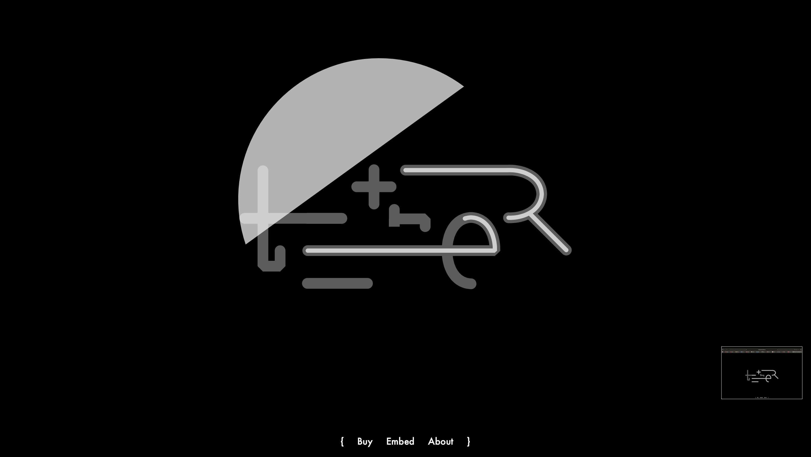
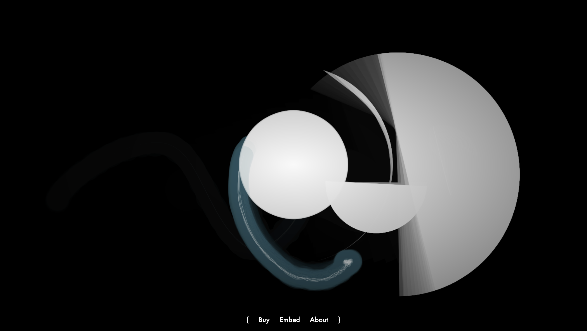
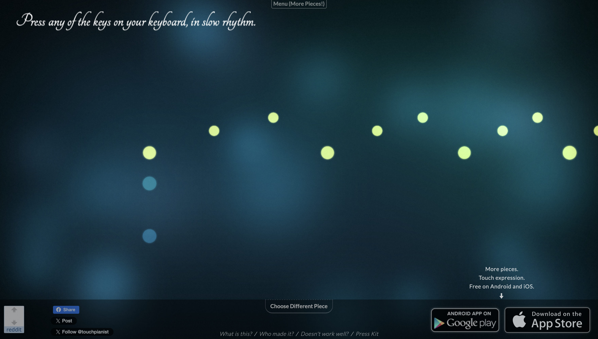
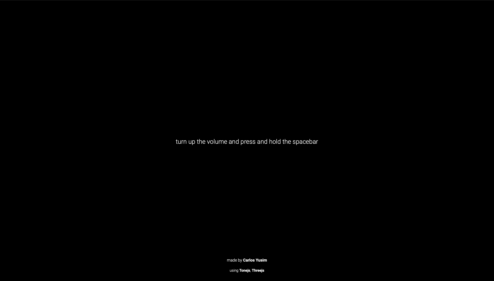
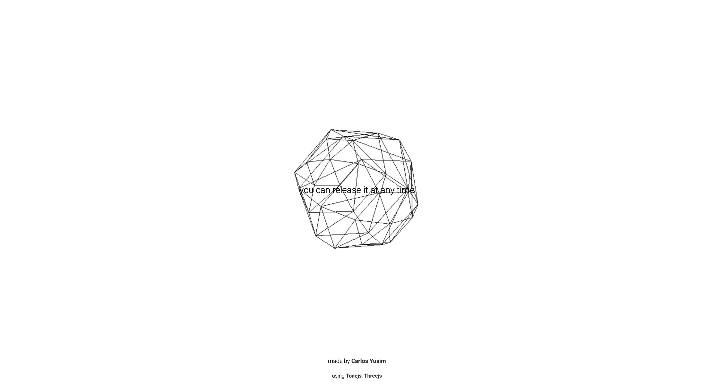
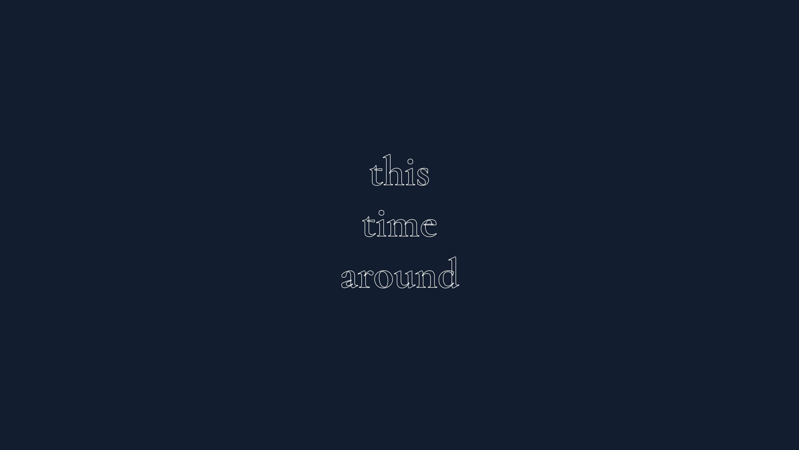

Design Scenario Analysis & Response
For this assignment, I have chosen Scenario 4, Sonic Timer, to further analyse and research about. It asks for a way of relating time that does not depend on quantitative measurements, I would like to propose something that takes that as an opening to ask what time might sound like if it were allowed to have a mood rather than just a value. So, instead of building something that tracks a session or counts down an interval, I wanted this to tie the instrument's entire sound world to an actual time of day. A user opening the instrument at dawn and opening it at midnight should be met with music that feels different and evoking distinct sounds, not because a timer told them how long they have been listening but because the instrument is responding to when they happened to arrive.
This instrument would allow users to notice and settle into the character of a particular moment in their day instead of tracking how much of the day has passed or how much remains. A small amount of control is given to users within that mood, letting them bring certain sound layers forward or ease them back as well as briefly opening or softening the whole texture but never letting users override what time of day is actually setting as the baseline. As this purpose follows the worth the project embodies, where a typical timer treats duration as something to be managed and optimised. This instrument treats the present moment as something worth pausing and listening to. It reflects a gentler and less productivity driven relationship with time. It also resists the idea that time only matters when it is being tracked towards some goal, proposing that simply being present within the moment and hearing what that moment might sound like is itself a valid way of relating to time.
Project Overview
Synopsis
Hourglow is a browser-based ambient instrument with no start or stop button, its harmonic mode and available sound layers shift according to the real-world time of day, read using the JavaScript's Temporal object. Users interact with the piece across two timescales: a slower tending gesture that brings individual sound layers forward or lets them recede and a faster breath gesture (press and hold) that temporarily brightens or opens the whole texture (sound) before settling back to its time appropriate baseline. It will display almost an invisible clock when interacted, enabling users to focus on the sounds of the day rather than the time.
Response
The instrument responds to the brief's purpose by making time legible through atmosphere rather than numbers. There is no visible clock unless users start interacting with the webpage by hovering their cursor across the screen. The felt sense of "what time is it" comes entirely from the mode and density of the sound itself. This also directly captures the project's worth, by withholding numeric time and offering only a mood, the instrument asks the user to relate to the present moment on its own terms rather than as a quantity to be tracked or optimised. I believe this is a very unique and interesting way to depict time, how time and sound could relate with one another.
Project Framing
Included
- Web Audio API for sound generation and layering
- Temporal API (extended technique), reading current time of day and translating it into musical parameters such as mode, density and filtering
- A minimal, abstract visual layer, supporting the sound rather than competing with it for attention
- Continuous and layered synthesis, not pre recorded audio suited to a sustained and ambient 'character'
Excluded
- Discrete note by note performance (no keyboard style or drum style triggering)
- Multiplayer or collaborative interaction, suited for single user
- Persistent accounts or long term data storage, any sense of change over time comes from real time passing not stored user history
Interaction Design Analaysis
Tether - Jono Brandel
Tether is a website that allows listeners to click and drag across an unfolding track, reshaping its accompanying shapes and sound in real time rather than triggering it from a blank state. The underlying track carries the harmonic content, any drag gesture produces something musically plausible which avoids a 'wrong input' problem entirely.


However, Tether's main weakness is depth over time where once the basic drag and reshape mechanic is understood there is little to nothing to further discover. This is due to Tether being built around one fixed song, it also holds no memory or relation with the user so after the tab is closed everything is gone. This could relate to Hourglow as it also reshapes an already playing texture rather than starting or stopping a sound from nothing. Its shallowness over repeated use is a useful caution and ties Hourglow's palette to time of day giving the instrument a source of ongoing variation that a fixed single piece (a little different from Tether.)
Touch Pianist - Batuhan Bozkurt
Touch Pianist lets a user tap any key at all and still produce a convincing performance of a full piano piece, the composition supplies the pitches and harmony regardless of timing precision. Its limitation is that it functions more as a performance interface for a fixed piece than a true instrument since the user shapes only the timing and triggering of the music not its content. The piece itself never changes and its appeal is partly borrowed from existing famous piano pieces.

For Hourglow, I believe that it was quite a strong precedent for the "no wrong layer combination" principle, the user cannot produce an incoherent result regardless of what the user tend or when. Since Hourglow's time of day variation is designed to solve exactly what that repeat engagement problem, it differs from Tether as it lacks of depth over repeated visits is the main weakness.
Holdspace - Carlos Yusim
Holdspace is built around a single deliberately minimal interaction, holding and releasing the spacebar. By committing fully to one input, the piece avoids any confusion about what to do and the feedback loop between pressing, holding and releasing feels direct and immediate.


Its weakness is that its whole piece is built on one gesture and once the hold-release behaviour is understood there is little to discover. Hourglow's also uses a single press and hold input to reshape an ongoing sound. The comparison shaped the decision to keep the breath gesture appropriately simple and legible in the same way but to pair it with a second. Thus, Hourglow does not rely on one gesture to carry the entire piece the way Holdspace does.
this time around - Kirby Fary
This piece invites a listener to explore a set of recorded audio fragments in a non-linear way, looping and layering them at their own pace rather than following any fixed sequence or timeline. What works well is the sense of unhurried permission it gives the listener, there is no correct order, no pressure to finish which suits its theme of noticing rhythm and routine rather than completing a task.

But the interaction can feel a little open-ended to the point of uncertainty, since a first time visitor may not immediately grasp what looping and layering are meant to achieve. For Hourglow, this piece is a strong precedent for both characterisation and worth as it treats sound exploration as something to dwell in rather than complete.
References
Eno, B. (1978). Ambient 1: Music for airports. Editions E.G. Music for Airports
Sherman, S. M., Sladek, M. R., Anderson, S. E., & Doane, L. D. (2023). Endogenous circadian rhythms in mood and well-being. Sleep Health. Endogenous circadian rhythms in a mood and well-being
MDN Web Docs. (n.d.). Web Audio API. Mozilla. Web Audio API
Brandel, J., & Plaid. (2014). Tether. Tether
Bozkurt, B. (2015). Touch Pianist. Touch Pianist
Yusim, C. (2017). Holdspace. Holdspace
Fary, B. (2022). this time around. this time around
MDN Web Docs. (n.d.). Temporal. Mozilla. Temporal
MDN Web Docs. (n.d.). Web Audio API. Mozilla. Web Audio API